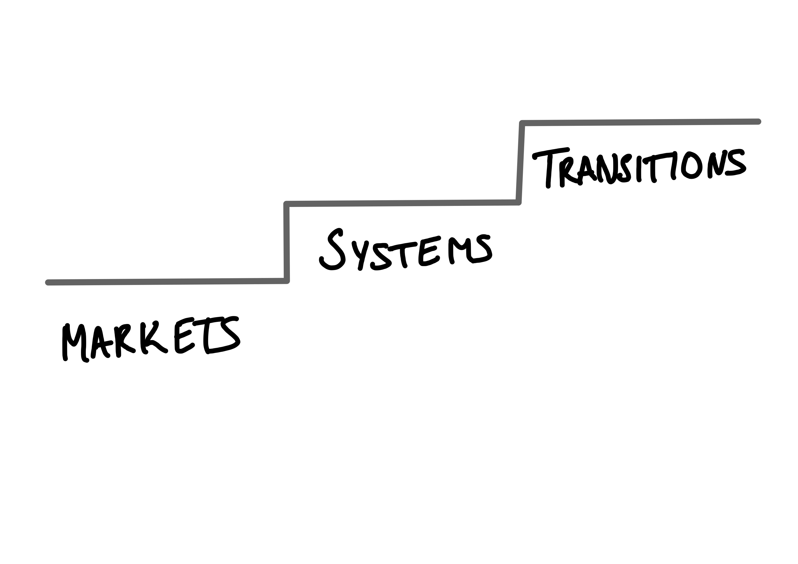
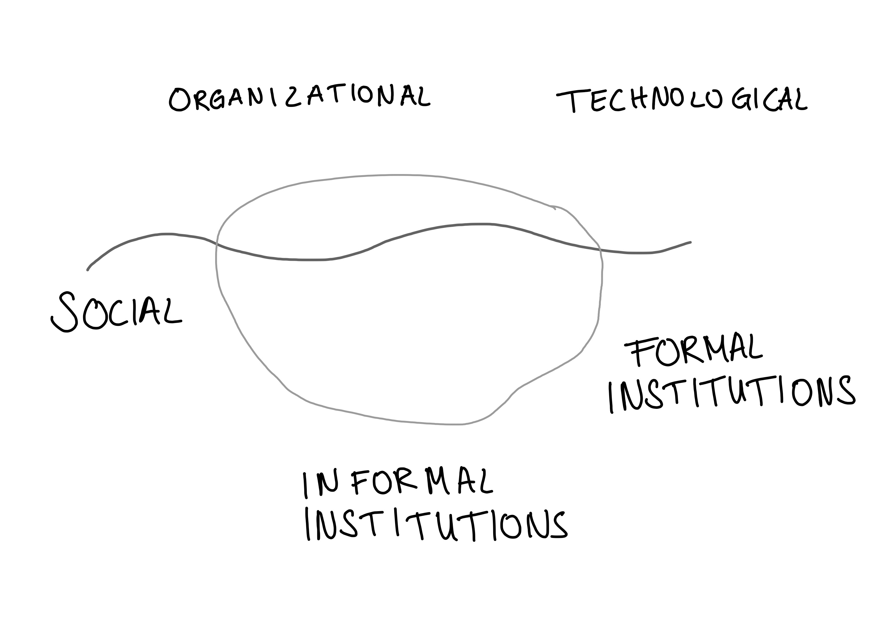

1 Innovation for Sustainability Transitions
2 Lecture Notes
These notes accompany the lecture “Innovation for Sustainability Transitions” held at Lund University on November 8th, 2022. You can find the slides at the bottom of this text.
This lecture introduces innovation as a driver of change in socio-technical systems. The top-down approach of mission oriented innovation policy and the bottom-up processes of the multi-level perspective and strategic niche management are introduced. The current perspective is contrasted with previous ways of thinking about innovation. Finally, we begin a discussion of how sustainability enters this topic.
- Know Mission Innovation Policy and MLP; describe characteristics, differences, and similarities between approaches
- Understand three frames of innovation policy research
- Critically evaluate the manner in which innovation is talked about in sustainability transitions.
2.1 Three Frames for Innovation
Over time the focus of innovation policy has shifted. The literature talks about different frames for innovation research and policy (Schot and Steinmueller 2018; European Commission, Directorate General for Research and Innovation 2020).

The first frame discussed in Schot and Steinmueller (2018) is innovation for growth. This frame was particularly influential in the post-war period and can be identified in Kuznets’ (1966)Modern Economic Growth. Note the reasons for why countries were willing to invest into science: to fight off unwanted economic events (inflation, unemployment, instability); spillovers into private sector; peace through defense spending. Often the spending was clearly defined with a mission in mind. Examples are winning the space race in the 1960s, or lessening the exposure to oil exporting nations in the 1970s. Within this frame the question of how to design markets optimally was at the heart of innovation policy. As you recall from economics of innovation, it is argued that market failures exist in the provision of discovery and invention. Overcoming these failures in the early stages of the innovation process (i.e., at the basic research and invention stage) trough public spending was the solution. In this framing technological progress is mainly viewed as positive. While negative possibilities are acknowledged, the positive elements outweigh. Hence, selecting which innovation should be pursued plays only a minor role.
The second frame focuses on innovation from a systemic perspective. This frame emerged from the realization that not all lower income countries caught up and benefitted from the – supposed positive externalities of – innovation developed in high income countries. Institutions at various scales play the central role in this frame. Innovation as a linear process is replaced with a convoluted, feedback driven systemic event. The main goal of innovation remains economic. Due to international competition the imperative to innovate in order to stay competitive increases too. Failure to provide innovation at a desired level is countered with systemic intervention. For example, by providing networking events, or creating collaboration programs. Such programs, however, have a mixed track record. Innovation is too complex to simply “copy-paste” the silicon valley elsewhere.
The third and most recent frame is that of innovation as means to achieve social transformation. Its core assumption is still that innovation is a “… force for creating a better world” (Schot and Steinmueller 2018, 1561). This third frame calls the narrative of innovation as always positive (even when it destroys something cf. Schumpeter and Elliott (2012)) into question.
The subject of transformation are socio-technical systems, or what Schot and Steinmueller (2018) call the backbones of modern societies (p. 1562). This requires more than new products or processes.

Figure 2.2 depicts an iceberg of innovation types for sustainability. Above the water level, the most visible part of the iceberg, are organizational and technological innovations. Organizational innovations include changes in management, or strategy. Examples of technological innovation are both new processes and products.
The fairphone, or IKEA’s better shelter are examples of product innovations. Process innovations include examples such as the app Too Good To Go.
Corporate Social Responsibility Reports are an example of organizational innovations. Another example are carbon emission audits.
The first level below the water line are social and formal intuitions. Innovations at this level are, for example, changes in lifestyle or consumer behaviors – these are social in nature – or changes in laws, regulations etc. The deepest and most invisible level in this metaphor are innovations in informal institutions. These include changes to norms, values and believes. For a paper that ties each of these innovations to climate change, give Otto et al. (2020) a read. Based on expert surveys, social tipping points with positive climate impacts are identified. The analysis includes estimations of the time horizons over which each level might change.
When discussing innovation for sustainability it is helpful to remember that innovation is more then only the introduction of new process or products.
The iceberg heuristic provides a helpful tool to analyze the depth of a transition. Take, for example, the mobility sector. In many places there are ambitions to promote the use of electrical vehicles (EV). The vehicles themselves are a readily recognized technological innovation. Some cities have begun to set up charging stations along parking spaces to promote switching to EV. This likely required changes to local laws or the creation of other new formal institutions. Similarly, longer “refueling” times of EV require users to adapt their behavior and for some even changes in their lifestyles. Innovation therefore goes beyond the readily visible top of the iceberg. But what about the deepest level? Some critiques argue that EV do not lead to a deep transition of the mobility sector, as the norm remains focused on providing individual transport solutions.
Only such transformation of the deepest levels is considered by Schot and Steinmueller (2018) as a socio-technical system transformation.
Note that in the literature transition and transformation are used differently by different authors (Hölscher, Wittmayer, and Loorbach 2018).
In the transformation literature, transitions are a fluent change towards slightly improved but fundamentally consistent systems. Transformations, on the other hand are fundamentally different, radical and non-linear changes to a system Roggema, Vermeend, and Timmermans (2012). This is the concept Mazzucato (2018) refers to when discussing missions aimed at generating transformations.
In the transitions literature, transformations are one possible pathway for transitions Geels and Schot (2007). Transformations happen when there is moderate landscape pressure on the regime. The socio-technical regime responds by moving development paths and innovation into the direction of the pressure.
In the third frame, the goal of social transformation is to address a specific issue society faces.
One issue of global scale is the overshoot of planetary boundaries. Rockström et al. (2009) introduced this concept and identified nine biophysical processes which regulate the Earth System into the current stable state under which humanity began to thrive. They indicate a safe operating space for humanity and reflect early warnings that a system state changing threshold might soon be reached (Steffen et al. 2015). Climate change, stratospheric ozone depletion, ocean acidification, atmospheric aerosol loading, land-system change, freshwater use, biochemical flows, biosphere integrity, and novel entities, these are the planetary boundaries. Since the 1950s, in a period dubbed the Great Acceleration, pressure on the planetary boundaries has increased dramatically (Figure 2.3; Steffen et al. (2011)). Wang-Erlandsson et al. (2022) have been the latest to measure how close we are to transgressing planetary boundaries (?fig-boundaries). Including their assessment of freshwater, we know now that we have overshoot six of the nine boundaries.


The planetary boundaries focus on environmental sustainability. We will dive deeper into these topics in my second lecture. In the mean time the Lund University MOOC “Working for a sustainable future: concepts and approaches” is a great resource to learn about key sustainability concepts. It also features videos on innovation for sustainability by Cristina Chaminade. These two lectures draw heavily from her previous work with this course.
But transformative innovation does not only target environmental issues. Population aging, education, or hunger are other areas in which innovation is needed to find a solution. A popular and important framework for addressing important issues are the Sustainable Development Goals. The SDG themselves are an important innovation.
Schot and Steinmueller (2018) highlight that the three frames build on one-another, emerging into discourse to different extents. This raises an important aspect for translating the frames into practice. Many researchers and policy makers have been educated when the first, or second frame were the most prominent. The call for innovation to be a force for good, is itself an informal institutional innovation. It calls many previous believes about innovation (policy) into question.
In the second section of this lecture we will examine one of the most vocal advocates for a deep change in believes about what innovation policy can and should do.
2.2 Top Down Change Policy – Mission Orientation
Mazzucato (2018) summarizes one of the most influential current innovation policy paradigms. She argues that the grand-challenges of our time need to be taken on by national governments. The scale of many issues (e.g. Figure 2.3), she argues, requires that resources are mobilized at equally large scales.
Many of these grand challenges are novel in so far, as there is a high urgency for solving them. The previous reactionary view of the first and second innovation frame, Weber and Rohracher (2012) argue, are not enough to provide answers for modern problems.
Indeed, for Mazzucato (2018) the government should not be passive at all. Instead of waiting for markets to form, fail and only then regulate, or for limited intervention in systems, mission oriented policy calls for a government which proactively engages in the innovation process and indeed economy at large.
2.2.1 Implementing Mission Policies
She proposes mission maps as a tool to visualize mission oriented policies. The process of a mission map attempts to turn the first and second frame thinking on its head. Instead of asking what should be done to improve innovation, the starting question in missions is what should be done to solve the problem. The emphasis is therefore not on picking winners in the sense of deciding from the start what innovation should be adopted, but picking those willing to accomplish the mission.
Missions have become a part of EU legislation in the from of EU Horizon Programmes (Mazzucato 2021). They are also present at various scales in Germany, the Netherlands, Sweden, the UK, but also cities such as Amsterdam. This raises some important questions about the extent to which the missions are socially co-developed. How are shared visions created? Who decides what goals are worth to pursue? Are we pushing political problems into the technical sphere, by crafting innovation missions around them? For this last question, lets return to the example of electrical vehicles as a part of more sustainable transport sector. Mazzucato (2021) highlights investments of the Obama administration into Tesla Motors as a successful example of state led risk capital. While Tesla is currently a company enjoying economic success, and the sector at large seems to grow, we do have to stop and consider: whose vision of a sustainable transport sector includes luxury electrical vehicles? Who is not included in this vision? Are there other potential visions for future mobility?
Further Reading: If you are looking for a more in-depth exploration of mission economy thinking, Mazzucato (2021) is a quick and accessible read.
2.3 Bottom Up Change Policy – Multi-Level Perspective
One of the most influential theories in transition studies is the Multi-level perspective. The MLP is deeply routed in Science, Technology and Society Studies, Evolutionary Economics and draws heavily on historical case studies. It is compromised of three analytical concepts: the landscape, socio-technical regimes and niche-innovation (Geels and Schot 2007). Figure 2.4 depicts an often used sketch illustration of how these concepts interact.
![The Multi-Level Perspective of @geels2007TypologySociotechnicalTransition. At the top wavy lines, to the left the annotation Landscape developments. In the middle a diamond shape its corners annotated with 'Industrial Networks, strategic games; techno-scientific knowledge; culture, symbolic meaning; infrastructure; sectoral policy; markets, user practices; technology. On the left margin the annotation 'Socio-technical regimes'. From the shape arrows point to the right. In the middle these arrows are interrupted by a thick line coming form the bottom. On the right hand side the diamond shape is formed differently. The diamond is connected to the landscape waves above by arrows pointing in both directions. The same arrows are at the bottom. The bottom row has an annotation on the left reading 'Technological niches'. From right to left we see small arrows forming the thick line interrupting the regime. A small group of arrows labeled 'failed innovation' moves first up, then down, without forming a thick line. In the right bottom corner an arrow moving right to left is labelled 'Time'.](https://ars.els-cdn.com/content/image/1-s2.0-S2210422411000050-gr2.jpg)
Let us step through it from the top to the bottom.
The sociotechnical landscape forms the exogenous background against which niche and regime actors operate. The events here are outside of the immediate control of both the regime and the niche, often unfold over long time horizons but exert pressure on the regime (Geels and Schot 2007). When you think of landscape, think about deep cultural patterns, macro-political developments etc.
The sociotechnical regime is routed in the evolutionary economic work of Nelson and Winter (2004) and their technological regimes (the cited edition in Geels (2007) is from 1982) . Sociotechnical regimes are shared cognitive routines of all those involved with a given technology. This includes users, policy makers, as well as companies and engineers (Geels and Schot 2007).
Niche innovation are novel, initially unstable configurations developed at the micro level. Often they are developed by small networks of agents at the periphery of a system.
2.3.1 Transitions of Socio-Technical Systems
In the MLP, there are different ways in which a socio-technical system can change, or rather, undergo a transition.
A transition is a
radical, structural change of a societal subsystem that is the result of co-evolution of economic, cultural, technological, ecological and institutional developments at different scale-levels.(Grin, Rotmans, and Schot 2010, 108)
| Transition pathways | Main actors | Type of (inter)actions | Key words |
|---|---|---|---|
| 1. Transformation | Regime actors and outside groups (social movements) | Outsiders voice criticism. Incumbent actors adjust regime rules (goals, guiding principles, search heuristics) | Outside pressure, institutional power struggles, negotiations, adjustment of regime rules |
| 2. Technological substitution | Incumbent firms versus new firms | Newcomers develop novelties, which compete with regime technologies | Market competition and power struggles between old and new firms |
| 3. Reconfiguration | Regime actors and suppliers | Regime actors adopt component-innovations, developed by new suppliers. Competition between old and new suppliers | Cumulative component changes, because of economic and functional reasons. Followed by new combinations, changing interpretations and new practices |
| 4. De-alignment and re-alignment | New niche actors | Changes in deep structures create strong pressure on regime. Incumbents lose faith and legitimacy. Followed by emergence of multiple novelties. New entrants compete for resources, attention and legitimacy. Eventually one novelty wins, leading to restabilisation of regime | Erosion and collapse, multiple novelties, prolonged uncertainty and changing interpretations, new winner and restabilisation |
The MLP, as well as, innovation systems at their various scales have become backdrops against which research is being carried out (Truffer et al. 2022). This does not mean that they have become less influential – far from it – but rather that they are not necessarily referenced in the precise manner in which they were conceived. For my own research, as an example, the ideas of a regime resisting change is very influential. But rather than viewing niche innovations as the main source of change, I am interested in how the regime is influencing the directionality (e.g., by legitimizing certain visions for the future) of the transition. We will come back to these questions in the second lecture, were we will be looking at the emerging bioeconomy and what sustainability means for transitions.
Because the MLP puts such an heavy emphasis on innovation from protected niches, early ideas focused on strategic niche management (SNM) (Geels and Schot 2007). Later iterations have focused more on other aspects of the model, such as regime and landscape changes.
2.3.2 Current Questions
While the origins of the model are fading from citations to some extent (Truffer et al. 2022), they still form an influential shared knowledge base for transition studies. Many questions are still being explored with the MLP framework, which we will not cover here. Example questions on the agenda are how to destabilize regimes (e.g., Frank and Schanz 2022), how multiple regimes interact (e.g., Rosenbloom 2020), and how regimes interact at different scales (e.g., Fuenfschilling and Binz 2018).
2.4 Discussion and Reflection
Using innovation to address grand challenges, sustainability or wicked problems, is surely needed. But not in the traditional way of thinking about innovation as a neutral at worst and positive at best force. Recasting innovation as synonymous with change and capable of deeply transforming our society opens new ways for policy makers.
Transformative innovation policy agrees that shared visions are needed and that they ought to be legitimized by broad participation (Haddad et al. 2022). But the question of how to do that is remains a central challenge. Even within highly mature innovation systems such as NIS in EU states or the US, the question of how to govern transition innovation policy is far from answered. In addition, some authors have already pointed out that innovation research itself needs to become more diverse (e.g., Preuß et al. 2021).
In Haddad et al. (2022) a concise review of transformative innovation policy (TIP) and its two biggest versions (MOIP and MLP) comes to the conclusion that much work remains to be done for these ideas to become viable tools for policy makers.
What do you think about the time and context of innovation? Can you envision the type of silo-free, quick moving mission innovation in non-(mature) democracies?
On the challenges of developing national innovation systems, their role for sustainable development and more, suggested reading Chaminade (2018) Advanced Introduction to National Innovation Systems.